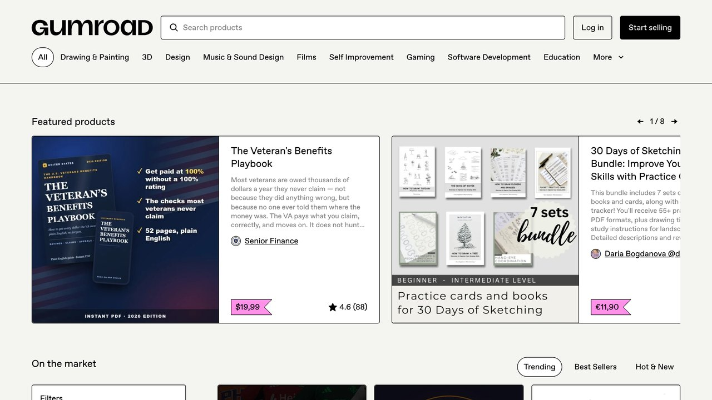
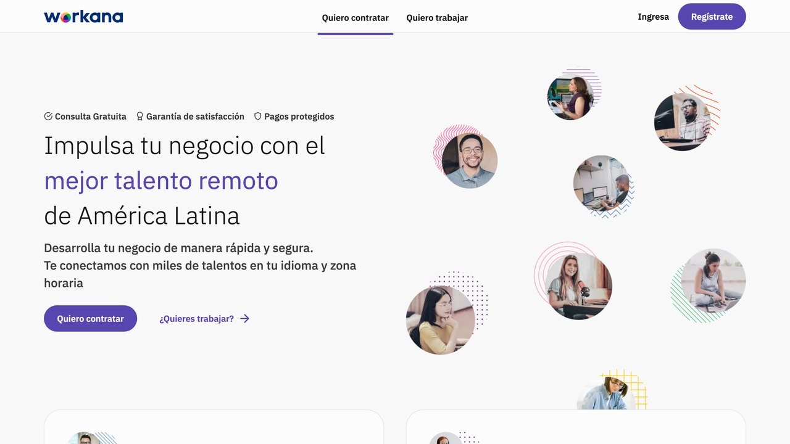

La distinción que separa un método real de uno hueco casi nunca está en la herramienta usada, sino en una pregunta simple: ¿existe un cliente dispuesto a pagar por el resultado final, con o sin mencionar la IA de por medio? Si la respuesta es sí, tienes un negocio. Si el único comprador plausible es alguien que quiere aprender a replicar el mismo método, tienes un embudo de marketing disfrazado de oportunidad.
5 negocios que puedes montar con IA
Si vienes del carrusel NEGOCIO, aquí tienes los cinco con la herramienta para cada uno. Son servicios que las empresas ya pagan; la IA te deja hacerlos más rápido, no te los regala.
1. Recepcionista con IA
Un asistente que contesta el WhatsApp de una clínica, peluquería o tienda a cualquier hora, responde dudas y apunta citas.
A quién: negocios locales que pierden llamadas y mensajes. Qué vendes: montarlo y cobrar una cuota por mantenerlo. Con qué: la plantilla de WhatsApp de n8n o ManyChat.
2. Contenido que se multiplica
De una idea, un vídeo o un pódcast del cliente sacas posts, carruseles y textos para cada red, con su tono.
A quién: marcas pequeñas sin tiempo para redes. Qué vendes: un paquete mensual de piezas. Con qué: Claude para escribir y la plantilla de redes de n8n o Postiz para programar.
3. El papeleo en automático
Facturas, correos repetidos e informes semanales: el trabajo aburrido que muchas empresas siguen haciendo a mano.
A quién: oficinas y pymes. Qué vendes: las horas que les ahorras (cobra por proyecto, no por hora). Con qué: n8n con Gmail y hojas de cálculo.
4. Webs en un día
Con Claude Code haces webs rápidas y cuidadas para negocios con una web de hace diez años, o sin web.
A quién: autónomos y comercios. Qué vendes: la web y su mantenimiento. Con qué: Claude Code y estas 21 webs de componentes y referencias.
5. Un chat con sus documentos
Un asistente que responde con los manuales, normas o catálogos de la empresa y dice de dónde saca cada respuesta.
A quién: equipos con mucha documentación interna. Qué vendes: montarlo y adaptarlo a sus documentos. Con qué: la plantilla de n8n «RAG Chatbot for Company Documents» (n8n.io/workflows/2753) con Gemini o Claude.
Cómo empezar sin humo: elige uno, hazlo gratis o muy barato para un negocio que conozcas y úsalo como ejemplo para el siguiente cliente. No prometas resultados que no controlas («más ventas», «x clientes»), promete lo que entregas. Y antes de cobrar, lee cómo darte de alta y declarar los ingresos.
1. Servicios apoyados en IA para clientes que ya existen
El método con el ingreso más rápido y predecible: usar IA para hacer en menos tiempo un trabajo que ya se paga hoy en el mercado — redacción, diseño, edición de vídeo, traducción, maquetación, análisis de datos básico. No es un producto nuevo; es el mismo servicio con un margen mejor porque cuesta menos horas producirlo.
Un freelance de contenido que antes tardaba seis horas en producir un artículo largo con investigación puede, con un flujo de trabajo asistido por IA bien construido (investigación, primer borrador, edición humana rigurosa antes de entregar), bajar ese tiempo a dos o tres horas sin bajar la calidad — siempre que la revisión humana final no se salte nunca, porque es la que protege la reputación con el cliente cuando el modelo se equivoca.
La clave para que esto sea rentable y no una carrera hacia el precio más bajo es no venderlo como "más barato porque uso IA", sino seguir cobrando el precio de mercado del resultado y quedarse con el margen de las horas ahorradas. El cliente paga por el resultado, no por el método usado para llegar a él.
- Elige un servicio que ya sepas hacer — redacción, edición, diseño, análisis — no uno que quieras aprender desde cero. El margen sale de la velocidad, no de la novedad.
- Construye un flujo de trabajo repetible: plantilla de prompt para el primer borrador, checklist de revisión humana, formato de entrega. Escríbelo una vez, reutilízalo con cada encargo.
- Ofrece el mismo precio de mercado a tres clientes o contactos existentes, no a desconocidos fríos — la primera venta casi siempre sale de una relación previa, no de publicidad.
- Cronometra el ahorro real en el primer encargo. Si no baja el tiempo al menos un 30%, el flujo todavía no está listo para venderse como ventaja.
¿Cuánto vale tu margen del Método 1?
Mueve los controles con tus propias cifras — el cálculo corre en tu navegador, no se envía a ningún sitio.
Cálculo: horas semanales × 4,33 semanas/mes × tu tarifa. "Días libres" asume jornadas de 8 horas — es una forma de ver el tiempo, no dinero adicional que aparece solo.
2. Automatización a medida para negocios pequeños
Muchos negocios locales y pequeñas empresas tienen procesos manuales repetitivos (responder consultas por email, generar presupuestos, organizar citas, resumir reseñas de clientes) que se pueden automatizar con herramientas visuales como n8n conectadas a un modelo de IA, sin escribir una sola línea de código complejo. El servicio consiste en diseñar, montar y mantener ese flujo para un negocio que no tiene tiempo ni interés en aprenderlo por su cuenta.
Clínicas, despachos, tiendas online pequeñas, agencias inmobiliarias — negocios con volumen de mensajes o tareas repetitivas, pero sin equipo técnico propio.
Un proyecto inicial de montaje, más una cuota mensual de mantenimiento — el ingreso recurrente es lo que convierte esto en un negocio, no en un encargo puntual.
Este método escala peor que un producto digital (cada cliente requiere trabajo de configuración específico), pero tiene una ventaja que compensa: la competencia real todavía es baja porque exige entender tanto la herramienta como el negocio del cliente, una combinación menos común de lo que parece.
Una clínica dental recibe 40 mensajes semanales de WhatsApp preguntando precios y disponibilidad, y una recepcionista los contesta uno a uno entre citas. Un flujo montado en n8n con un nodo de IA clasifica el mensaje (precio, cita, urgencia), responde las preguntas frecuentes directamente y solo escala a un humano los casos ambiguos. Tiempo de montaje: entre 6 y 10 horas repartidas en una semana. Cobro habitual: 300-600 € por el montaje inicial, más 40-80 €/mes de mantenimiento y ajustes.
3. Productos digitales que resuelven un problema concreto y estrecho
Plantillas, mini-herramientas o agentes especializados que resuelven un problema muy concreto para un público muy concreto — no "una IA que te ayuda con todo", sino, por ejemplo, un asistente que solo genera descripciones de producto para tiendas de Shopify de un nicho específico. Cuanto más estrecho el problema, más fácil es que el producto sea genuinamente mejor que usar un modelo genérico directamente.
El error más caro en este método es construir antes de validar: pasar semanas desarrollando un producto sin haber confirmado antes, hablando con clientes potenciales reales, que existe gente dispuesta a pagar por ese problema resuelto. Validar primero con una versión mínima — incluso manual, sin automatizar nada todavía — ahorra mucho más tiempo del que cuesta.
- Escribe el problema en una frase concreta: "para quién" y "qué tarea le quita más tiempo hoy".
- Busca 10 personas reales de ese público (comunidades, foros, grupos de nicho) y pregúntales cómo resuelven ese problema ahora — no si comprarían tu producto, sino qué hacen hoy.
- Si al menos 3 de 10 describen la misma molestia sin que se la sugieras, hay señal real de demanda.
- Resuelve el problema a mano para las primeras 2-3 personas — un documento, una plantilla, un servicio manual — antes de automatizar nada.
- Solo entonces construye la versión con IA, cobrando desde el primer cliente piloto, aunque sea con descuento.
«Si el modelo de negocio solo funciona cuando le vendes el método a otra persona, no tienes un negocio: tienes un embudo de marketing con la IA como excusa.
— Redacción El Telar
4. Contenido y audiencia, con expectativas realistas
Crear contenido (vídeo, newsletter, redes) con apoyo de IA para reducir el tiempo de producción y monetizarlo después con publicidad, afiliación o productos propios. Es el método más saturado de los cuatro y el que peor relación tiene entre esfuerzo inicial e ingreso — la mayoría de canales nuevos no generan ingresos significativos en los primeros meses, con o sin IA de por medio.
Lo que sí cambia con la IA es el coste de producción, no la dificultad de conseguir audiencia: bajar el coste de hacer un vídeo de dos horas a veinte minutos no garantiza que alguien vaya a verlo. Tratar este método como un negocio con un plazo de maduración largo, en vez de como un atajo rápido, evita la frustración más común entre quien lo empieza con expectativas de método 1.
Como referencia realista y no como promesa: la publicidad display (AdSense y similares) rara vez genera un ingreso relevante por debajo de varios miles de visitas mensuales estables, y la afiliación depende casi por completo de que la audiencia confíe en la recomendación — lo que exige constancia durante meses antes de que ese ingreso empiece a notarse. Quien trata el contenido como el método más rápido de los cuatro suele ser quien más rápido lo abandona.

5. Lo que nadie te cuenta: darte de alta y declarar los ingresos
En España, cobrar de forma habitual por cualquiera de estos cuatro métodos obliga a darte de alta como autónomo (o facturar a través de una figura como una cooperativa de facturación mientras validas el negocio) y a declarar ese ingreso en la renta, exista o no un contrato de por medio. No es un detalle menor: cobrar en negro por servicios recurrentes es una infracción, y la mayoría de plataformas de pago (Stripe, PayPal Business) ya reportan movimientos a Hacienda a partir de ciertos umbrales.
La tarifa plana de autónomos reduce mucho la cuota los primeros meses. Consulta con una gestoría antes del primer cobro recurrente — el coste de la consulta es mínimo comparado con una regularización posterior.
Vender a clientes de otros países de la UE añade la gestión del IVA intracomunitario (OSS). Una gestoría especializada en digital lo resuelve en una tarde; hacerlo mal a mano sale más caro después.
Qué usar para cada método (sin pagar de más)
No hace falta suscribirte a diez herramientas para empezar cualquiera de los cuatro métodos. Con un asistente de IA de propósito general y, como mucho, una herramienta especializada por método, es suficiente para validar si el negocio funciona antes de invertir en nada más.
Claude, ChatGPT o Gemini para el trabajo diario, y una guía de cómo escribir instrucciones precisas vale más que cualquier suscripción adicional — la calidad del resultado depende más de la instrucción que del modelo.
n8n para el flujo visual, más un modelo de IA conectado vía API — el coste por mensaje suele ser de céntimos, muy por debajo de lo que se cobra al cliente por el servicio montado.
7. Los cuatro métodos, uno junto al otro
| Método | Primer ingreso | Techo realista | Requiere |
|---|---|---|---|
| 1. Servicios | 2-8 semanas | Limitado por tus horas disponibles | Una habilidad que ya vendas hoy |
| 2. Automatización | 1-3 meses | Alto, pero escala con esfuerzo por cliente | Entender negocio + herramienta |
| 3. Productos digitales | 1-6 meses (validación incluida) | Escala sin límite claro de horas | Validar antes de construir |
| 4. Contenido | 6-18 meses | Alto pero muy pocos lo alcanzan | Constancia larga sin ingreso inicial |
8. Cuatro señales de que un método es humo
Si la forma principal de ganar más es que otras personas compren el mismo curso o método, no un cliente externo pagando por un resultado, es estructura de venta en cadena.
"Gané 10.000 € el mes pasado" sin mostrar una fuente verificable (factura, panel de una plataforma real) es una afirmación, no una prueba.
Cualquier promesa de ingresos altos con "solo dos horas al día" y cero riesgo de que algo salga mal ignora cómo funciona cualquier negocio real, con o sin IA.
Si te cuesta explicar qué problema resuelve el negocio para un tercero que no sea "aprender a hacer lo mismo", probablemente no hay negocio detrás, solo el curso.
11 Claudes juzgan tu idea de negocio (Founder Skill)
Founder Skill es un paquete gratuito de 11 skills para Claude (licencia MIT, sin registro ni clave de API) que pone a prueba una idea de negocio antes de lanzarla. Cada skill hace un papel: consejo de administración, analista de competencia, panel de compradores, precios, oferta, financiero, marketing, marca, operaciones, lanzamiento y plan final.
Cómo se usa
- En Claude Code, pega el enlace del repositorio y escribe
install skill, o usa/plugin marketplace add Jakeschincariol/founder-skill. - Empieza por
/founder-board: le cuentas la idea y tres consejeros la puntúan y votan. - Sigue el orden que propone el autor: competencia, panel de compradores (
/founder-consumer), precios, oferta y/founder-cfo. - Termina con
/founder-plan, que junta todo en un plan con un veredicto calculado: rentable, todavía no o incompleto.
Si no usas Claude Code, puedes pegar un solo archivo SKILL.md al principio de un chat, pero pierdes los subagentes y las herramientas de cálculo.
Lo honesto: el panel de 100 compradores es una simulación hecha por IA. Sirve para descubrir objeciones y números que no habías pensado, no para sustituir a clientes reales.
Repositorio oficial: github.com/Jakeschincariol/founder-skill
Antes de ganar más, controla lo que gastas: Actual Budget
Hablar de ganar dinero con IA tiene poco sentido si no sabes adónde va lo que ya ganas. Actual Budget es una herramienta de finanzas personales 100 % gratuita y de código abierto (MIT) que funciona primero en tu dispositivo y usa el método de presupuesto por sobres.
Cómo empezar
- Descarga la app para Windows, macOS o Linux desde actualbudget.org.
- Crea tus cuentas (banco, efectivo, tarjeta) con su saldo actual.
- Crea categorías, que funcionan como sobres: alquiler, comida, transporte, ocio, ahorro.
- Asigna el dinero disponible a los sobres hasta que no quede nada sin asignar.
- Apunta los gastos o importa los extractos del banco. Si un sobre se vacía, decides de cuál quitas.
Si vienes de otra app de presupuestos, su documentación explica cómo migrar.
Lo honesto: las apps locales son gratuitas. Para sincronizar entre varios dispositivos necesitas tu propio servidor o un alojamiento de terceros; su README menciona PikaPods (unos 2 $ al mes) o Fly.io (unos 1,50 $). Y como cualquier presupuesto, solo funciona si eres constante.
Código: github.com/actualbudget/actual